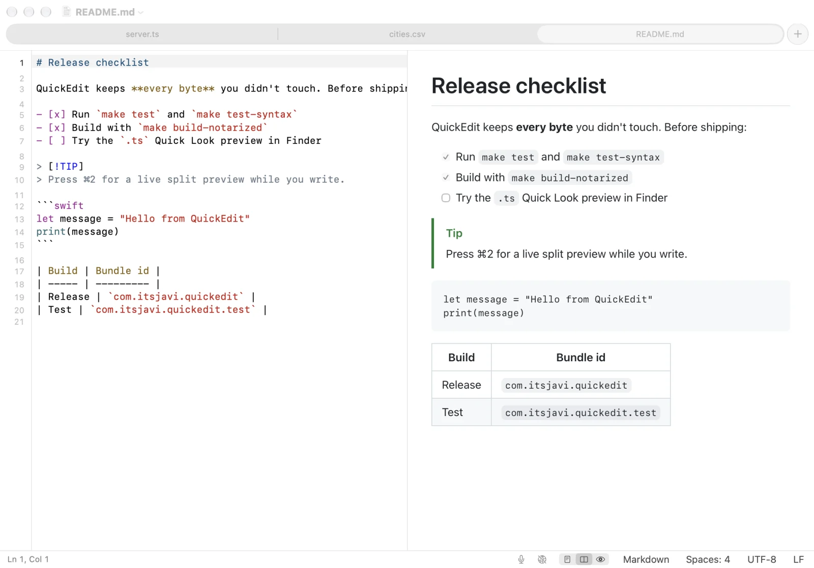
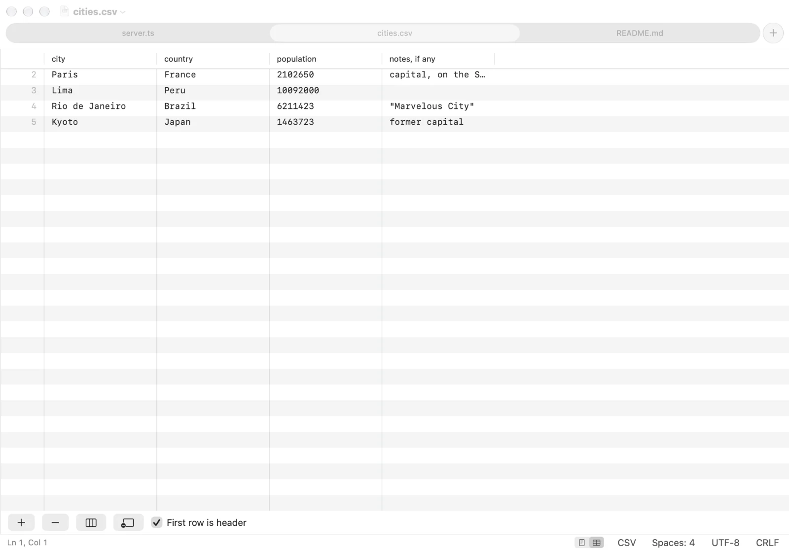
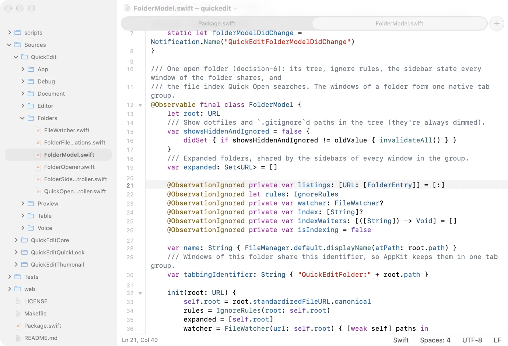

Free & open source · Native on macOS 26
Quick, safe edits
for code and text files.
QuickEdit is a native Mac code viewer and editor for small, quick edits: a modern TextEdit, a lighter Sublime Text, not an IDE. Open a file, change what you came to change, and it's saved byte for byte as it came in, except what you changed.
Latest release · macOS 26 on Apple silicon · MIT licensed
No release is out yet: build it from source in a minute.

Features
Small edits, done right.
Syntax highlighting with tree-sitter
Highlighting comes from tree-sitter grammars bundled with the app, so it follows the
structure of the code, not just its keywords. That includes
Lumiose components (.stsx
and .sjsx), with their <style> blocks highlighted as
CSS.
CSV and TSV get rainbow columns. Logs and .txt open as plain text, and
QuickEdit picks the language from the file name, so Dockerfile,
Makefile, .env and ignore files are recognized too.
Highlighted languages
- JavaScript / JSX
- TypeScript / TSX
- Lumiose .stsx .sjsx
- CSS
- SCSS / Sass / Less
- HTML
- Vue
- Svelte
- Markdown
- CSV / TSV
- JSON / JSONC / JSON Lines
- YAML
- TOML
- GraphQL
- Protocol Buffers
- Terraform / HCL
- Nix
- SpiceDB schemas
- C
- C++
- Objective-C .h by content
- C#
- Java
- Kotlin
- Swift
- Go + go.mod
- Rust
- Zig
- Dart
- Python
- Ruby
- PHP
- Lua
- PowerShell
- Metal and GLSL
- GDScript
- Godot resources and shaders
- Dockerfile
- CMake
- XML plists, SVG, Xcode files
- Xcode .xcconfig .strings .pbxproj
- INI and config files
- Shell scripts
- Makefiles
- SQL
- .env
- Ignore files
- Diffs
Safe edits, byte for byte
Files are saved exactly as they came in, except what you changed. The encoding and
line endings are kept, even mixed ones; the status bar shows them and converts them
only when you ask. New lines and pasted text use the file's own line ending, and
indentation follows the file and its
.editorconfig.
Invisible and look-alike characters, like zero-width spaces, bidirectional controls and stray BOMs, are always marked in orange and counted in the status bar. Smart quotes, autocorrect and spell checking are off. Files that can't be decoded exactly open read-only, binary property lists open read-only as XML, and binary files are refused.
When another app changes a file, a window without unsaved edits reloads it, and ⌘Z brings back what was showing. With unsaved edits, a bar above the text offers Reload or Keep My Edits, and nothing is replaced until you choose.
What QuickEdit keeps
- Encoding: UTF-8, UTF-16 or UTF-32 with or without a BOM, Windows and ISO Latin, Mac Roman, Shift JIS…
- Line endings: LF, CRLF or CR, even mixed
-
Indentation, detected per file or set by
.editorconfig -
Trailing whitespace and final newline, unless
.editorconfigsays otherwise - Every byte you didn't touch
Markdown and HTML preview
Switch between editor, split and preview with ⌘1, ⌘2 and ⌘3; the preview follows your unsaved edits. Markdown renders like GitHub, with tables, task lists and alerts.
HTML previews never run scripts. Local CSS and images load, and remote content only when you allow it for that window.


CSV and TSV as a table
Switch a CSV or TSV file to Table with ⌥⌘T or from the status bar, and edit it like a spreadsheet: change cells, add or delete rows and columns, and use the first row as headers.
Every change rewrites only the cells it touches, so the quoting, the delimiter and the line endings stay as they were, and ⌘Z undoes it. Files over 25 MB open as text only.


Folders and Quick Open
Open a folder with ⇧⌘O, or drop one on QuickEdit, for a file tree beside
the editor. Dotfiles and .gitignored files stay out of the way until
you show them, and the folder's files open as tabs of one window.
Press ⌘P to open any file by name. Create, rename, move and trash files right in the tree; open files follow along.
Files and folders get icons from the Material Icon Theme, in light and dark variants, or Finder's icons if you prefer.


Details
And the small things that add up.
-
Files as tabs
Every file opens as a native window tab (⌘T for a new one), in light or dark, and a dot marks the tabs with unsaved changes. Autosave and version history like TextEdit, or explicit ⌘S saving if you prefer.
-
Line commands
Go to Line (⌘L), move (⌃⌘↑ ⌃⌘↓), duplicate, delete, join and sort lines, indent and outdent, and toggle comments (⌘/). Soft wrap on or off, and a status bar you can hide.
-
Code folding
Fold JSON, CSS, YAML, TOML, JS/TS, Lumiose, Go, Rust, Python, Swift, Markdown, HTML and XML from the gutter or with ⌥⌘← and ⌥⌘→. Folding never changes the file.
-
Voice notes in Markdown
Record from the status bar or with ⌃⌘R. The clip is saved next to the file, linked at the caret, plays in the preview, and can be transcribed on your Mac.
-
Finder and Quick Look
TypeScript
.tsfiles (which macOS thinks are videos), YAML, TOML, CSS and Lumiose files get a plain-text Quick Look preview, and Finder's icons and preview pane show their first lines. -
Your default editor, per type
In Settings › File Types, check the types QuickEdit should open by default and Apply. Unchecking one gives it back to the app that had it before.
Privacy
Your files stay on your Mac.
-
No tracking
No analytics, no telemetry and no account. Nothing about you or your files is sent anywhere.
-
Almost no network
The only connection QuickEdit makes is checking GitHub for updates. An HTML preview loads remote content only when you allow it for that window.
-
Transcribed on device
Voice notes are transcribed with on-device speech recognition; the audio never leaves your Mac.
Get it
Download QuickEdit.
A disk image for macOS 26 on Apple silicon, from the project's GitHub releases.
No release is out yet. Until the first one, build it from source.
Building from source needs Xcode 26: make install builds the release app
and copies it to /Applications.
git clone https://github.com/itsjavi/quickedit.git
cd quickedit
make install